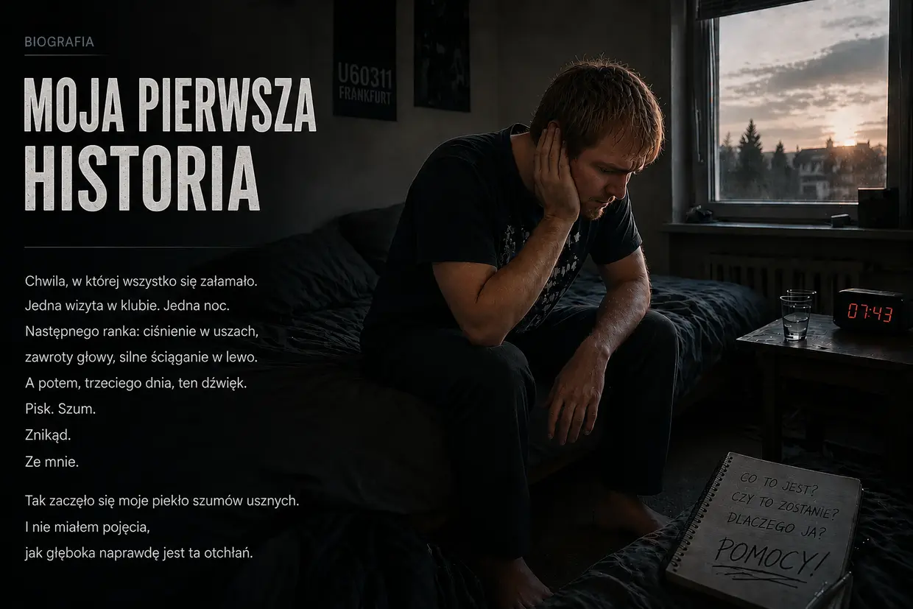
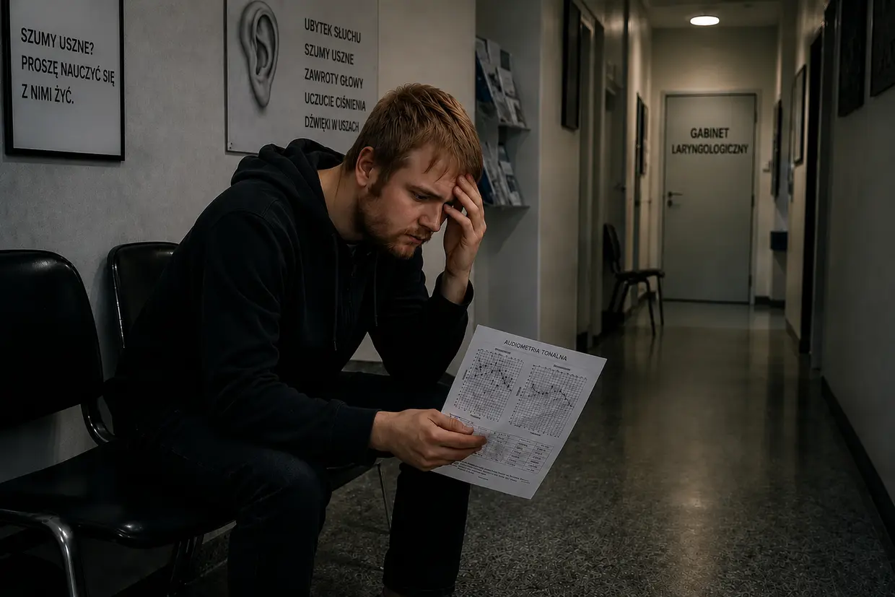
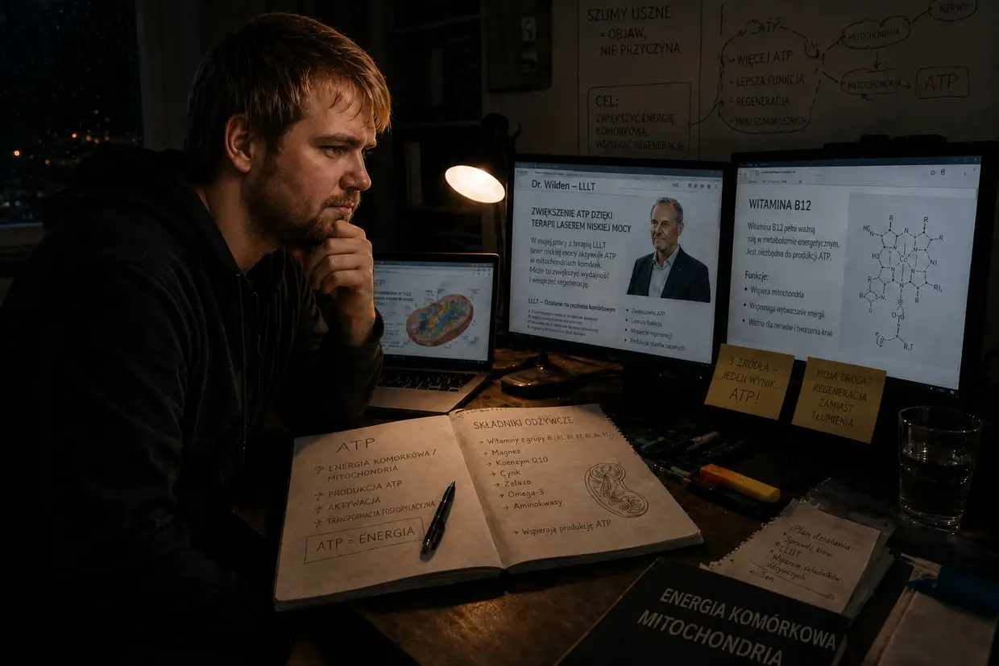
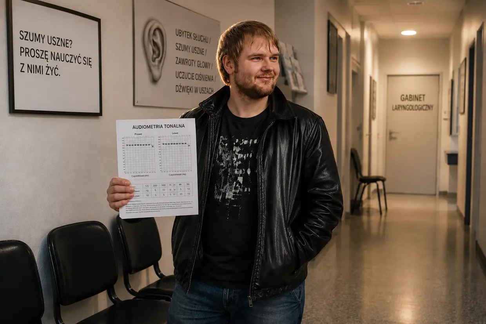

Moja droga do piekła szumów usznych — część 1: Piekielna jazda
Cześć, nazywam się Dustin Müller. Jako ktoś, kto sam tego doświadczył — i to kilka razy — czułem przemożną potrzebę stworzenia tej strony. Chcę pokazać innym osobom z szumami usznymi, jak dzięki wieloletnim poszukiwaniom, prawdziwym protokołom biohackingu i własnym doświadczeniom osobiście doszedłem do pełnego wyzdrowienia. Zanim jednak zagłębimy się w mechanizmy, muszę opowiedzieć, jak to wszystko w ogóle się u mnie zaczęło. A nie był to medyczny przypadek, lecz zderzenie czołowe.
Szukasz krótkiej wersji? Ta obszerna wersja wchodzi w każdy szczegół — audiogramy, wizyty u laryngologów i poszczególne przełomy. Jeśli wolisz coś bardziej zwartego, właściwym miejscem jest krótka historia.
Jesień 2011: niezniszczalne ciało i wcześniejsze przeciążenie
Masz 23 lata, energii bez końca i wydaje ci się, że ciało zniesie wszystko. Z takim nastawieniem traktowałem również swoje uszy. Kochałem muzykę. Przez lata słuchałem jej w słuchawkach tak głośno, że rodzice słyszeli ją przez zamknięte drzwi mojego pokoju. Mój układ słuchowy był już „rozgotowany”, choć o tym nie wiedziałem.
Wszystko zaczęło się za sprawą mojego kuzyna. Ponieważ nigdy wcześniej nie byłem porządnie w klubie, miałem pojechać z nim do U60311 we Frankfurcie. Miałem złe przeczucie, ale mimo to się zgodziłem. Już schodząc po schodach, czułem fizycznie, jak brutalny jest bas. Naiwnie wybrałem w środku rzekomo najlepsze miejsce — około 10 metrów bezpośrednio przed potężnymi głośnikami, z lewym uchem dokładnie zwróconym ku źródłu dźwięku. To był błąd, który przewrócił pierwszą kostkę domina.
Następny poranek: złudny spokój
Gdy tylko zamknęły się za nami drzwi, poczułem obłędne ciśnienie w uszach — znacznie silniejsze po lewej stronie. Wszystko brzmiało głucho, jak pod wodą. Kuzyn powiedział, że to normalne i minie. Ponieważ byłem pijany, padłem do łóżka. Następnego ranka, gdy próbowałem wstać, od razu runąłem z powrotem na poduszkę — układ równowagi był rozbity, a mnie gwałtownie ściągało mechanicznie w lewo.
Miałem skrajnie głębokie zaufanie do zdolności regeneracyjnych swojego ciała, więc podszedłem do tego niemal z humorem: czas sam to naprawi. I tak właśnie się wydawało. Drugiego dnia ściąganie w lewo osłabło, a uczucie ciśnienia prawie zniknęło. Odetchnąłem — myślałem, że mi się upiekło.
Dzień 3: potwór się budzi
Trzeci dzień po klubie. Obudziłem się i nagle usłyszałem dźwięk przypominający piszczenie lodówki. Co do cholery? Przyłożyłem głowę do ściany. Nasłuchiwałem przy gniazdku. Sprawdziłem komputer i budzik. Nic. Wtedy zatkałem uszy dłońmi.
O kurwa. To dochodzi ze mnie. Jest w mojej głowie.
Stałem przez kilka minut w szoku. Co to jest? Czy to już zostanie? W lewym uchu dudnienie, szum, syreny i głośny pisk. W prawym na tym etapie nie odczuwałem jeszcze szumów usznych. Mimo szoku pomyślałem: to znowu minie.
Zatrucie oprogramowania (14-dniowy termin)
W internecie w ciągu kilku minut znalazłem odpowiedzi: nagła utrata słuchu i uszkodzenie ucha wewnętrznego. Trwałe ubytki słuchu, często także dźwięki w uszach. A potem zdanie, które zmroziło mi krew w żyłach: „Trzeba to leczyć w ciągu 14 dni — w przeciwnym razie stan staje się przewlekły i zostaje na całe życie”. Na forum tinnitus.de czytałem wątki ludzi, którzy żyli z tym już od pięciu lat. Pięć lat? Ja pierdolę. Z fizycznego defektu powstało potężne zagrożenie psychiczne.
Zdrada w białym kitlu (moja pierwsza wizyta u laryngologa)

Pojechałem do laryngologa, który leczył mnie w dzieciństwie. Nadzieja. Zaraz nadejdzie wybawienie. Opowiedziałem o wizycie w klubie i objawach. On, już lekko zirytowany: „Proszę nie zwracać na to uwagi. Proszę posłuchać muzyki, żeby zagłuszyć te dźwięki”. Dopytałem: „Ale czy nie trzeba tego leczyć w ciągu 14 dni? I czy dalsza ekspozycja na dźwięk naprawdę ma sens?”. On: „Najpierw zrobimy audiometrię”. To powiedziawszy, wyszedł z gabinetu. Moja wiara zaczęła się kruszyć.
Horror ciszy (audiometria)
Dopiero gdy wszedłem do kabiny audiometrycznej, dotarło do mnie, jak poważne było uszkodzenie mojego słuchu. W tej absolutnej ciszy znikało każde naturalne maskowanie — dźwięki w lewym uchu były niewiarygodnie głośne. Badanie składało się z trzech części: określenia częstotliwości i głośności szumów usznych, pomiaru ogólnej zdolności słyszenia oraz sprawdzenia przewodnictwa kostnego przez czaszkę.
Wyrok
Lekarz, trzymając wynik w dłoni, wyjaśnił mi, że mój słuch jest trwale uszkodzony i nic nie da się z tym zrobić. Wstrząśnięty zapytałem o szanse. Znów lekko poirytowany: „Musi się pan nauczyć z tym żyć. Nie wsłuchiwać się, odwracać uwagę, zakładać słuchawki”. Na moje absurdalne pytanie, czy nadal wolno mi chodzić do klubów: „Tak, to nie stanowi problemu”. Po tych słowach się pożegnał.
Przysięga i droga do domu
Droga do domu była czystym piekłem. Czułem ciężar ważący setki kilogramów. W rozpaczy przez moment pomyślałem: albo się tego pozbędę, albo nie chcę dłużej żyć. Kiedy jednak dotarłem do domu, bezdenny smutek nagle zamienił się w bunt. Nie mogłem uwierzyć, że żaden lekarz w Niemczech nie wie, czym są szumy uszne. Zacisnąłem pięści:
„Albo odejdą szumy uszne, albo odejdę ja. Nie pozwolę, żeby to coś zdominowało moje życie. Sam muszę sprawdzić, co da się zrobić”.
Dziki Zachód sposobów leczenia

Sam zacząłem zdobywać wiedzę i natrafiłem na przytłaczającą mnogość „terapii”:
- Kortyzon i miłorząb: środki poprawiające krążenie i działające przeciwzapalnie — wydawały się logiczne jako wsparcie regeneracji słuchu.
- Szczęka i kark (CMD/odcinek szyjny): teorie, według których napięcia wywołują te dźwięki. Ponieważ jednak moje szumy uszne zdecydowanie powstały przez klubowy bas, odezwał się mój wykrywacz bzdur.
- TRT i maskowanie: zagłuszanie innymi dźwiękami. Rzeczywiście mogłem w ten sposób krótkotrwale zmniejszyć szumy uszne — ale gdy wyłączałem dźwięk maskujący, wracały bardziej agresywne i głośniejsze. (Dziś wiem: każdy nowy dźwięk zmusza i tak już wyczerpane komórki rzęsate do pracy — zużywają ostatnie ATP, którego właściwie potrzebują do regeneracji).
- Suplementy diety: wtedy wyśmiewałem tych ludzi. Co za idioci, myślałem — wydają jeszcze pieniądze na coś, co uważałem za całkowicie bezużyteczne. Nigdy bym nie przypuszczał, że później właśnie tą drogą — przez prawdziwą energię komórkową, produkcję ATP i odpowiednie składniki odżywcze — rozgryzę własne szumy uszne.
Druga wizyta u laryngologa: fatalna rada
Rano, przed drugą wizytą u laryngologa, szumy uszne nagle potężnie się nasiliły — i po raz pierwszy stały się odczuwalne również w prawym uchu. (Dziś wiem: dalsza ekspozycja na dźwięk zgodnie z radą lekarza — muzyka oraz biały szum w nocy — ponownie rzuciła moje komórki na kolana i wciągnęła w to także prawe ucho). Drugi laryngolog był życzliwy i podnosił mnie na duchu. Przepisał mi miłorząb, zalecił wystarczającą ilość snu i ruch. Na pytanie o słuchawki odpowiedział: „To wręcz korzystne, bo pomaga odwrócić uwagę”. (Z dzisiejszej perspektywy biologii komórkowej była to absolutnie fatalna rada). Na pytanie o trzymiesięczny próg przewlekłości usłyszałem tylko: „Zobaczymy… można się też nauczyć je kompensować, czyli całkowicie wyłączyć z percepcji”. I znów pojawiło się to pół zdania, które wykluczało jakiekolwiek prawdziwe wyzdrowienie.
Zdradliwy kołowrotek
Tak mijały dni i tygodnie. Za dnia szkoła odwracała moją uwagę. Wieczorami uciekałem w zdradliwą pętlę maskowania: muzykę w słuchawkach i nieustanne dźwięki wodospadu. Dzięki temu mogłem na krótko uczynić sytuację znośną. Biologicznie kręciłem się jednak w kółko: przez ciągłą warstwę dźwięków utrzymywałem wyczerpane uszy w permanentnym stresie. Moje komórki spalały ostatnie ATP na przetwarzanie sztucznego szumu, zamiast wykorzystać je do fizycznej naprawy. Czysty tryb przetrwania.
Drugi krach: hiperakuzja i pionowe salto obrazu
Pewnego ranka nagle powróciło potężne uczucie ciśnienia w lewym uchu. Próbowałem je zignorować i pojechałem do szkoły. Ponieważ wciąż ufałem radzie lekarza, w drodze popełniłem fatalny błąd: bardzo głośno puściłem w samochodzie ulubioną piosenkę. Gdybym wiedział, co jeszcze czeka mnie tego dnia w szkole, zawróciłbym na miejscu. Sygnały ostrzegawcze już tam były. Ale tego nie zrobiłem: zajęcia kosztowały, więc jechałem dalej. (Ta głośna muzyka była ostatnią kroplą dla moich całkowicie wyczerpanych komórek).
Na pierwszej lekcji nagle pojawiły się silne zniekształcenia słuchu i bolesna nadwrażliwość na zwykłe dźwięki — hiperakuzja. (Dziś wiem: „amortyzatory” mojego ucha, czyli zewnętrzne komórki rzęsate, zużyły ostatnie ATP). W ciągu kolejnych godzin ciśnienie w lewym uchu stawało się coraz bardziej brutalne. Wtedy to się stało: cały obraz zaczął obracać mi się pionowo — jakbym wykonywał w głowie pół salta. Świat stanął na głowie. Po kilku sekundach obraz wrócił do normy. Pozostały jednak silne zawroty głowy z uczuciem kołysania, potężne ściąganie w lewo i przytłumiony słuch w lewym uchu. (Zastój jonów w moim uchu wewnętrznym stał się tak ogromny, że przelał się na sąsiedni narząd równowagi).
W panice próbowałem to wytrzymać. Gdy tylko zaczęła się przerwa, zniknąłem stamtąd. Powrót samochodem był skrajnie nieodpowiedzialny — przez potężne zawroty głowy co kilka sekund musiałem korygować tor jazdy. Chciałem jednak tylko znaleźć się w bezpiecznym miejscu. Ten drugi krach był ostatecznym punktem zwrotnym: Nie mogę dłużej po prostu tego przeczekiwać.
Laryngolodzy numer 3 i 4: tabletki zamiast odpowiedzi, kłamstwo o fantomie i etykieta „to psychika”
Jeszcze tego samego dnia załatwiłem pilną wizytę u trzeciego laryngologa. Audiometria, badanie węchu i test na „położeniowe zawroty głowy”, który niczego nie zmienił. (Dziś to jasne: nie były to luźne kryształki, lecz wodniak endolimfatyczny — żadne potrząsanie głową tu nie pomoże). Jego koleżanka dorzuciła diagnozę: „kolejna nagła utrata słuchu, minie w ciągu 14 dni” — albo może zatkane zatoki; zwykłe zgadywanie na podstawie objawów. Potem padła bomba: „Wie pan, wiele osób popada w depresję. Jeśli dolegliwości nie miną, chętnie przepiszę panu leki przeciwdepresyjne”. Siedziałem tam i nie wierzyłem własnym uszom. Mój układ równowagi się załamał, a jej rozwiązaniem były… leki psychotropowe? Przysiągłem sobie: nigdy.
Czwartemu laryngologowi — „specjaliście” — przedstawiłem całą swoją historię. Zamiast wejść na poziom komórkowy, rzucił lodowato: „Słyszał pan kiedyś o terapii poznawczo-behawioralnej? Pański problem polega na tym, że za bardzo koncentruje się pan na problemach ze słuchem i przez to podtrzymuje szumy uszne”. Odpowiedziałem: „Ale przecież ten dźwięk powstał fizycznie po wizycie w klubie!”. Nie zareagował w ogóle. Na pytanie o kortyzon: „To miałoby sens tylko przez pierwszych 14 dni. W pańskim przypadku trzeba przyjąć, że to dźwięk fantomowy”. Na koniec znów polecił mi TRT z dźwiękami przeciwstawnymi — i uciął rozmowę, gdy wyjaśniłem, że maskowanie tylko nasila moje szumy uszne. System skapitulował i zrzucił winę na mnie.
Absolutne dno: izolacja i porażka systemu
Koszmar osiągnął apogeum podczas moich własnych urodzin (półtora miesiąca po nagłej utracie słuchu). Hiperakuzja i zniekształcenia słuchu doprowadzały mnie do obłędu. Moje własne szumy uszne były tak głośne, że całkowicie zagłuszały słowa innych ludzi. Doszło do tego dziwaczne zjawisko: litery brzmiały zupełnie inaczej niż wcześniej — „S” jak „F”, „T” jak „D”. Nie wytrzymałem już tego zalewu bodźców, przerwałem własne przyjęcie urodzinowe i uciekłem do domu. W kolejnych dniach zawroty głowy stały się tak silne, że chwilami groził mi upadek — zespół objawów odpowiadający medycznie chorobie Ménière’a. Byłem całkowicie odizolowany i odcięty. Opuszczony przez życie i przez lekarzy, którzy tylko wbijali mi do głowy, że mój umysł wariuje i potrzebuję leków przeciwdepresyjnych.
Pierwsze kluczowe doświadczenie: dowód przeciwko kłamstwu o fantomie
Akurat późnym wieczorem w weekend dostałem zapalenia przewodu słuchowego wskutek infekcji — nie miałem więc wyboru i zawlokłem się na izbę przyjęć Szpitala Uniwersyteckiego we Frankfurcie. Laryngolog sięgnął po maleńki odsysacz, żeby kolejno oczyścić oba przewody słuchowe. I właśnie w tej chwili wydarzyło się absolutnie kluczowe doświadczenie: gdy przenikliwy hałas szalał w lewym uchu, jednocześnie czułem, jak szumy uszne po tej stronie reagują na ten huk agresywnie i wybuchowo. Potem w prawym uchu: dokładnie to samo.
Był to doskonały test A/B na własnym ciele. Mój umysł rozłożył twierdzenia „specjalisty” na kawałki: psychologiczny dźwięk fantomowy nie reaguje jednocześnie na czysto mechaniczny bodziec dźwiękowy w konkretnym przewodzie słuchowym! Dla mnie ta reakcja była niezbitym dowodem: wadliwe źródło wciąż znajdowało się tam, głęboko w moim uchu. Pod wpływem hałasu komórki natychmiast krzyczały o pomoc.
Wlew kortyzonu i cud opatrunków z gazy
Laryngolog mimochodem zapytał, ile czasu minęło od nagłej utraty słuchu. Dwa miesiące. Ponieważ wciąż mieściłem się w magicznym trzymiesięcznym terminie, warto było spróbować kortyzonu. Natychmiast się zgodziłem i zostałem na noc na oddziale. W szpitalnym łóżku szukałem dalej i trafiłem na prywatną stronę internetową pacjenta z szumami usznymi. To, co tam przeczytałem, było logiczne z punktu widzenia biologii komórkowej: dalszy hałas drastycznie nasila szumy uszne. Do tego link do doktora Wildena i jego terapii laserem niskiej mocy, która celowo pobudza produkcję ATP w komórkach. W 100% pasowało to do doświadczenia z odsysaczem.
Po trzech dniach wypisano mnie do domu — z grubymi opatrunkami z gazy w obu uszach z powodu zapalenia przewodów słuchowych. Już w tych dniach zauważyłem, że szumy uszne stały się wyraźnie cichsze! Najpierw sądziłem, że to zasługa kortyzonu. Kiedy jednak przeczytałem na stronie doktora Wildena, jak fundamentalnie ważne jest aktywne szukanie ciszy, olśniło mnie: przez kilka dni opatrunki z gazy mocno odcinały moje uszy od dźwięków! Zwykły laryngolog nigdy nie pozwoliłby mi tak szczelnie zabandażować uszu. Mimowolnie otrzymałem dowód, że absolutna cisza coś zmienia.

Huk, dynamika i protokół absolutnej ciszy
Kilka dni później dokonałem kolejnego ważnego odkrycia. Podczas używania małej buteleczki z kremem tuż przy uchu coś nagle głośno strzeliło. W ułamku sekundy moje szumy uszne zawyły — ALE po bardzo krótkim czasie wróciły do swojego „normalnego” poziomu. Zrozumiałem jak na dłoni: moje szumy uszne nie były czymś „stałym”, lecz zjawiskiem skrajnie dynamicznym! Reagowały w czasie rzeczywistym na hałas nasileniem — i słabły, gdy konsekwentnie szukałem ciszy.
Wyciągnąłem z tego bezwzględne wnioski. Od tej pory aktywnie spędzałem w całkowitej ciszy tyle czasu, ile tylko mogłem. Muzyka, filmy i spotkania z przyjaciółmi z codzienności stały się rzadkimi „nagrodami” — a jeśli już, to bezwzględnie bez słuchawek, bardzo cicho i tylko przez chwilę.
Sześć miesięcy ciszy — i zastój na poziomie 25%
SZUMY USZNE RZECZYWIŚCIE słabły z miesiąca na miesiąc. Z perspektywy czasu ich głośność po około ośmiu miesiącach zmniejszyła się mniej więcej o jedną czwartą. Oczywiście nie mogłem w 100% idealnie utrzymywać kompletnej ciszy — nawet konieczne podróże samochodem (łącznie 200 km w obie strony) ponownie podbijały szumy uszne do głośnego poziomu. To było tak, jakbym przez cały tydzień oszczędzał uszy „na darmo”.
Potem wydarzyło się coś frustrującego: przy poprawie o około 20–25% zdrowienie nagle się zatrzymało. Doprowadziłem izolację do skrajności — unikałem rozmów, stale nosiłem zatyczki do uszu, a nawet usunąłem z pokoju tykający zegar ścienny. Nic się jednak nie zmieniało. Zero.
Korekcja atlasu, CMD i odcinek szyjny — ślepa uliczka
Wtedy wpadłem na pomysł, by jeszcze raz głęboko przyjrzeć się zależnościom między szczęką, odcinkiem szyjnym kręgosłupa a szumami usznymi. Natrafiłem na dysfunkcję czaszkowo-żuchwową (CMD) i dostałem od dentysty szynę zgryzową. W ośrodku ortopedycznym stwierdzono zespół odcinka szyjnego kręgosłupa i zalecono trening siłowy (Med X). Oba zalecenia realizowałem żelazną dyscypliną, jednocześnie nadal zachowując ciszę. Po dwóch miesiącach przyszło otrzeźwienie: dolegliwości CMD i odcinka szyjnego się zmniejszyły — ale w szumach usznych nie zmieniło się ABSOLUTNIE NIC.
Ostatnia deska ratunku: korekcja atlasu. Przejechałem 200 km do naturoterapeuty, który specjalnym urządzeniem i ręcznymi chwytami ustawił mój przekrzywiony atlas z powrotem na miejscu. Po kilku tygodniach to również nie przyniosło — niczego. Jedyny efekt uboczny: naturoterapeuta polecił mi łuski babki jajowatej, mieszankę glinki mineralnej i probiotyki na przewlekłe zapalenie błony śluzowej żołądka. I rzeczywiście: uporczywy stan zapalny, który męczył mnie prawie od roku, zniknął. To zrobiło na mnie wrażenie — medycyna konwencjonalna zawiodła, naturoterapeuta dowiózł rezultat.
Witamina B12 — najważniejsze (przypadkowe) kluczowe doświadczenie
Mój ojciec cierpiał wtedy na polineuropatię. Jego lekarz rodzinny rozpoznał wyraźny niedobór witaminy B12 i przepisał zastrzyki. Kiedy pewnego wieczoru na moich oczach podał sobie ampułkę, niedługo później powiedział: ból się zmniejszył, znów zrobiło mu się cieplej. Taka mała czerwona ampułka wywołała coś aż tak fizycznego?
Zacząłem szukać informacji i przeczytałem: B12 to WITAMINA układu nerwowego. Wegetarianie (a byłem nim od piętnastego roku życia!) oraz pacjenci z przewlekłym zapaleniem błony śluzowej żołądka (moje dopiero niedawno ustąpiło) są szczególnie narażeni. Zrobiłem badanie krwi u lekarza rodzinnego: niedobór potwierdzony, najniższy zakres normy. Lekarz odmówił mi jednak zastrzyków — „wciąż w normie”. Wyszedłem z gabinetu przybity.
Kiedy wieczorem ojciec potrzebował kolejnego zastrzyku B12, zebrałem się na odwagę i również poprosiłem, żeby mi go podał. Ważne: wyraźnie odradzam robienie tego bez opieki lekarza. Wow — po kilku minutach poczułem lepsze krążenie, przyjemne ciepło i jaśniejszą głowę. Odprężony poszedłem spać.
NASTĘPNEGO RANKA: absolutny cud. Zauważyłem to natychmiast, kilka sekund po przebudzeniu — szumy uszne potężnie się zmniejszyły! Z poprawy o 25% nagle zrobiła się poprawa o dobre 40%. Leżałem oszołomiony, bliski łez. W ciągu dnia znów się wprawdzie nasiliły — ale nie wróciły już do poprzedniego poziomu. A kolejnego ranka znowu: 40%.
Na stronie doktora Wildena przeczytałem, że jego laser celowo pobudza produkcję ATP w komórkach. A B12 jest niezbędna właśnie do tej produkcji ATP. KLIK! Być może wcale nie potrzebuję drogiego lasera — mogę zwiększyć ATP za pomocą precyzyjnie dobranych składników odżywczych.
Kolka żółciowa i cud lecytyny (osłonka mielinowa)
Gdy czekałem na wysokodawkowe preparaty multiwitaminowe z USA, spadła na mnie kolejna katastrofa: kolka żółciowa wywołana kamieniami żółciowymi. Nocą na izbie przyjęć lekarka zaproponowała mi tylko operację — wycięcie pęcherzyka żółciowego. Odmówiłem i na własne ryzyko wróciłem do domu.
Znów poszukiwania w internecie: ktoś opisał, że wielomiesięczne przyjmowanie granulatu lecytynowego całkowicie rozpuściło jego kamienie żółciowe. Zdobyłem go już następnego dnia, przyjąłem 30 g i rzeczywiście poczułem, jak ciśnienie w prawym nadbrzuszu słabnie. Ważne: przy kamieniach żółciowych należy bezwzględnie szukać opieki medycznej — to moje całkowicie osobiste doświadczenie z ostrej sytuacji, a nie porada dotycząca leczenia innych osób.
Prawdziwy przełom przyszedł jednak trzy dni później: po zastrzyku B12 i granulacie lecytynowym znów wydarzył się cud. Następnego dnia: poprawa o 60–65% względem stanu wyjściowego! Po miesiącach zastoju. Zacząłem szukać informacji: lecytyna jest jednym z podstawowych budulców osłonki mielinowej (izolacji nerwu). To właśnie ona, według badań, ulega uszkodzeniu w szumach usznych wywołanych hałasem — „podobnie jak zniszczona plastikowa osłona cienkiego przewodu elektrycznego”. A B12 to NAJWAŻNIEJSZA witamina dla regeneracji osłonki mielinowej. Cholera — czyli potrzebuję nie tylko ATP, lecz także BUDULCA!
Przełom do 80 procent (obejście za pomocą kompleksu witamin B)
Dzięki lecytynie, preparatowi multiwitaminowemu i zastrzykom B12 zdrowienie postępowało — ale szumy uszne zatrzymały się przy poprawie o około 70%. Podejrzewałem, że pozostałe witaminy z grupy B nie wchłaniają się w wystarczającym stopniu. Zdobyłem B1 i B2 w ampułkach oraz B3, B5 i B8 w wysokodawkowych tabletkach. I TAK, TAK, TAK: z tygodnia na tydzień kolejna redukcja! W 16.–17. miesiącu po wizycie w klubie zostało już rzeczywiście tylko 20% szumów usznych (czyli poprawa o 80%). Ale potem znowu: zastój.
Ostateczne wyzdrowienie: „Carpet Bombing” komórek
Szukałem informacji jak opętany i doszedłem do wniosku, że myślenie wyłącznie o B12 i lecytynie było zdecydowanie zbyt wąskie. Do pełnej naprawy mieliny organizm potrzebuje całego bogactwa innych składników odżywczych — omega-3 (DHA/EPA), aminokwasów, witaminy C, rozpuszczalnych w tłuszczach witamin A/D/E/K oraz minerałów. Dosłownie się nimi zalewałem: dwa razy w tygodniu zastrzyki z witamin z grupy B, trzy–cztery razy w tygodniu po 30 g lecytyny, codziennie aminokwasy w proszku, 3 g omega-3, witamina C w wysokiej dawce, mieszanka mineralna Life Extension, magnez i cynk NOW Foods, codziennie szklanka LaVita, a do tego tabletki multiwitaminowe doktora Ratha. Ortomolekularne „bombardowanie dywanowe”.
Wygasanie i koniec koszmaru (100% wyzdrowienia)
Pełny zestaw składników odżywczych ostatecznie zmienił dynamikę. Mój organizm miał teraz energię ATP ORAZ kompletny wachlarz budulców. W połączeniu z trybem mnicha mógł wreszcie naprawdę pracować. Tak jak na początku: rano komórkowy akumulator był naładowany snem — najlepszy stan. Wieczorem, wskutek zmęczenia całym dniem, szumy uszne znów stawały się głośniejsze. Cisza wgryzała się jednak nieustannie coraz głębiej w dzień: najpierw dźwięk znikał do południa. Potem do popołudnia. Wieczorne załamania stawały się coraz słabsze i krótsze.
I wtedy nadszedł ten jeden, ostateczny poranek — nigdy go nie zapomnę. Już w ułamku sekundy po przebudzeniu poczułem: w mojej głowie jest inaczej. Z bijącym sercem — podekscytowany jak dziecko w Boże Narodzenie — wepchnąłem zatyczki głęboko do uszu. Nasłuchiwałem… i nie było absolutnie NIC.
Ściemniacz ostatecznie stanął na zerze. Rano, w południe, wieczorem — nic. Tylko naturalna, spokojna cisza, której nie znałem od prawie dwóch lat. Szumy uszne odeszły. Zniknęły całkowicie.
To uczucie było nie do opisania. Głębokie, ciepłe poczucie ostatecznej ulgi — i absolutnej satysfakcji. Wygrałem: nie poddałem się, zatriumfowałem nad lekarzami od „musi się pan nauczyć z tym żyć”, a na końcu nie potrzebowałem nawet drogiego lasera. Moje ciało naprawiło to samo. Osłonka mielinowa została odbudowana, rusztowanie aktynowe komórek słuchowych znów stało, wadliwy styk został naprawiony, a mózg wyłączył awaryjny wzmacniacz — centralne wzmocnienie (Central Gain). Biologia zwyciężyła.
Tego ranka nie wiedziałem jeszcze, że wiele miesięcy później inna fatalna reakcja łańcuchowa zepchnie mój organizm w najcięższą postać CFS (zespołu przewlekłego zmęczenia). Wiedzę, że nawet to, co „nieuleczalne”, można wyleczyć, zabrałem jednak ze sobą do kolejnego piekła.
Ta historia jeszcze się tutaj nie kończy. To, co przyszło po pierwszym triumfie, było prawdziwym testem wytrzymałości — i świadomym, szalonym dowodem, że mój biologiczny model naprawdę działa.
